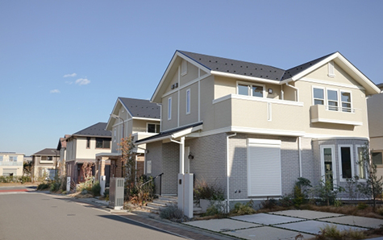
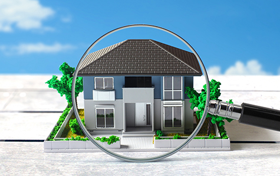
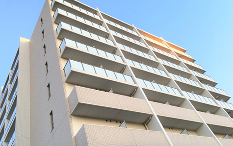
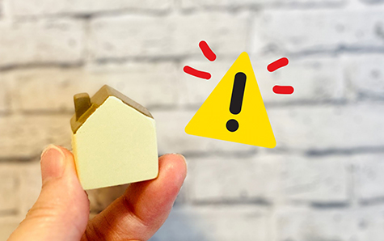
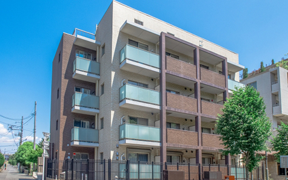

戸建て・区分マンション
- ホーム
- 戸建て・区分マンション
戸建て・区分マンション
相模原市・厚木市で戸建てや区分マンションの売却を検討している方へ、アイモットが物件種別に応じた売却方法をご案内します。戸建てと区分マンションでは、査定時に確認される項目や準備すべき書類、買主が重視するポイントが異なります。
代表が物件の特徴と売主様のご事情を整理し、納得できる売却へ導きます。
戸建てと区分マンションで異なる売却のポイント
戸建ては土地と建物を一緒に売却するため、建物の状態だけでなく、土地の広さや形状、接道、境界なども査定に影響します。区分マンションでは、室内の状態に加えて、管理状況、修繕積立金、共用部分なども重要です。
それぞれの特徴を理解し、購入希望者が不安に感じる点を事前に整理することで、円滑な売却につながります。
※表は左右にスクロールして確認することができます。
| 比較項目 | 戸建て | 区分マンション |
|---|---|---|
| 主な査定対象 | 土地・建物・接道・境界 | 室内・階数・管理状況 |
| 管理費など | 原則として不要 | 管理費・修繕積立金が必要 |
| 売却時の確認事項 | 境界・越境・建物の状態 | 管理規約・修繕計画 |
| 買主が重視する点 | 土地の価値・建物の状態 | 立地・眺望・管理状態 |
| 必要書類 | 測量図・建築関係書類など | 管理規約・総会資料など |
戸建て売却で確認される主なポイント

戸建ての査定では、建物の築年数や状態だけでなく、土地の条件も確認されます。同じ広さの土地でも、形状、道路との接し方、高低差、建築に関する制限によって評価は異なります。建物が古い場合も、すぐに解体する必要はありません。中古戸建てとして売る方法と、土地として売る方法を比較して判断することが大切です。
土地の広さ・形状・接道状況
戸建ての価格は、建物だけでなく土地の価値に大きく影響されます。土地の面積、間口、奥行き、形状、前面道路の幅、道路へ接している長さなどが査定対象です。土地が不整形である場合や、道路との高低差がある場合も、利用方法によって評価が変わります。購入希望者が建て替えを検討できるかどうかも重要なポイントです。
建物の築年数と管理状態
建物の築年数が古くても、定期的に修繕やリフォームをおこなっていれば、評価につながる場合があります。外壁や屋根、水回り、給排水設備、シロアリ被害などの状態も確認されます。
過去に修繕した箇所がある場合は、工事内容や実施時期が分かる資料を用意しましょう。不具合を隠さず伝えることで、契約後のトラブルを防ぎやすくなります。
境界や越境の有無
戸建てを売却する際は、隣地との境界が明確になっているかを確認します。塀、屋根、配管、樹木などが境界を越えている場合は、買主や隣地所有者との調整が必要になることがあります。
境界標が見当たらない場合や、測量図と現況が異なる場合は、土地家屋調査士への相談が必要です。売却前に状況を把握しておくことが大切です。
再建築できる土地かどうか
現在建物が建っていても、建て替え時に同じような建物を建築できるとは限りません。接道義務を満たしていない土地や、建築基準法上の道路に接していない土地では、再建築が難しい場合があります。
再建築の可否は、購入希望者の判断や売却価格に大きく影響します。分からない場合は自己判断せず、不動産会社へ調査を依頼しましょう。
戸建てを売却する
主な方法
戸建ての売却では、建物を残して中古戸建てとして売る方法、古家付き土地として売る方法、建物を解体して更地で売る方法があります。どの方法が適しているかは、建物の状態、立地、解体費用、買主の需要によって異なります。工事を先に進めるのではなく、複数の売却方法で査定を受けて比較しましょう。
中古戸建てとして売却する
建物をそのまま利用できる場合は、中古戸建てとして売却する方法があります。購入後すぐに住みたい方や、リフォームを前提に探している方が主な対象です。建物の状態や設備、リフォーム履歴を分かりやすく伝えることで、購入希望者が検討しやすくなります。大がかりな工事をせず、清掃や整理整頓を中心に準備する方法もあります。
古家付き土地として売却する
建物の価値が低い場合でも、すぐに解体せず、古家付き土地として販売できます。買主が建物を利用するか、購入後に解体するかを選べるため、幅広い需要に対応しやすくなります。
一方で、解体費用を考慮した価格交渉が入る場合があります。建物の状態や解体費用の目安を確認し、売出価格に反映させることが大切です。
更地にして売却する
建物を解体して更地にすると、土地の形状や広さが分かりやすくなり、新築を希望する買主が検討しやすくなります。ただし、解体費用が必要になり、工事後は土地の固定資産税が高くなる場合があります。また、再建築できない土地では、解体後に建物を建てられなくなる可能性もあります。必ず調査と査定を受けてから判断しましょう。
戸建てを高く売るための準備

戸建てを高く売るためには、建物の印象を整えるだけでなく、土地や設備に関する情報をそろえることが重要です。購入希望者は、購入後に必要な修繕費や建て替えの可否を気にします。
状態を正確に伝え、判断材料を提供することで、安心して検討してもらいやすくなります。費用をかける前に、効果が見込める準備を選びましょう。
室内・庭・外回りを整える
内覧前には、室内の清掃や整理整頓に加え、庭や玄関、駐車場などの外回りも整えましょう。雑草や不要品が多いと、建物全体の管理状態が悪い印象を与える可能性があります。すべてを新品のようにする必要はありません。玄関、水回り、窓、庭など、購入希望者の目に入りやすい場所を優先して清潔な状態に整えることが大切です。
修繕履歴や建築資料を準備する
外壁塗装、屋根修理、給湯器交換、耐震工事などをおこなっている場合は、工事の時期や内容が分かる資料を準備しましょう。建築確認済証、検査済証、設計図書、測量図なども、建物や土地の情報を確認するために役立ちます。書類が見つからない場合も売却できる可能性はありますが、早めに不動産会社へ相談してください。
区分マンション売却で確認される主なポイント

区分マンションは、専有部分だけでなく、建物全体の管理状況や共用部分も査定に影響します。立地、階数、方角、眺望、間取りに加え、管理費や修繕積立金、長期修繕計画なども確認されます。同じマンション内で売却事例がある場合は、有力な参考資料になります。室内の状態と建物全体の評価を分けて考えることが大切です。
立地・階数・方角・眺望
マンションでは、駅からの距離、周辺施設、階数、方角、日当たり、眺望などが価格に影響します。同じ建物内でも、階数や位置によって売却価格が異なることがあります。角部屋、専用庭、ルーフバルコニーなどの特徴がある場合も、購入希望者への訴求ポイントになります。物件固有の魅力を整理し、販売資料に反映させましょう。
室内の状態とリフォーム履歴
区分マンションでは、キッチン、浴室、洗面所、トイレなどの設備状態や、床、壁、建具の傷みを確認します。過去にリフォームをおこなっている場合は、工事内容や時期が分かる資料を準備しましょう。
ただし、売却前に大がかりなリフォームをしても、費用を回収できるとは限りません。現状のまま売る方法も含めて比較することが重要です。
管理状況と修繕計画
マンションの管理状態は、資産価値を判断する重要な要素です。共用部分の清掃状況、管理会社の体制、長期修繕計画、大規模修繕の実施状況などが確認されます。
修繕積立金の不足や値上げ予定がある場合は、購入希望者の判断に影響することがあります。管理組合から届く資料を確認し、必要な情報を正確に伝えましょう。
管理費・修繕積立金の滞納
管理費や修繕積立金に滞納がある場合は、売却前に金額や支払い方法を整理する必要があります。滞納分を残したまま売却できる場合もありますが、契約条件や精算方法を明確にしなければなりません。
また、駐車場、駐輪場、専用使用部分などの利用状況も確認します。管理会社に問い合わせ、最新の内容を把握しておきましょう。
区分マンションを売却する主な方法
区分マンションも、戸建てと同様に仲介と買取から売却方法を選べます。室内の状態が良く、売却までの時間に余裕がある場合は、仲介で高値を目指しやすくなります。
一方、築年数が古い、室内に荷物が残っている、早く現金化したいなどの事情がある場合は、買取が向いていることもあります。
仲介で幅広く買主を探す
仲介では、物件情報サイトなどを通じて、居住用や収益用としてマンションを探している買主に紹介します。立地や管理状態が良い物件は、複数の購入希望者から検討される可能性があります。居住中の場合は内覧対応が必要になるため、生活への負担も考慮しましょう。売却期限に余裕があり、価格を重視する方に適しています。
買取で短期間の売却を目指す
買取では、不動産会社が区分マンションを直接購入します。広告や複数回の内覧が原則として不要なため、周囲に知られず早く売却したい方に向いています。室内の荷物や設備の故障がある場合も、そのまま相談できる可能性があります。
ただし、仲介より価格が低くなる傾向があるため、手取り額と売却時期を比較して判断しましょう。
区分マンションを高く売るための準備
区分マンションを高く売るには、室内の第一印象を整えるだけでなく、管理状態に関する資料を準備することが大切です。購入希望者は、購入後の毎月の負担や将来の修繕予定も確認します。管理費や修繕積立金だけでなく、駐車場の空き状況、ペット飼育、リフォーム制限など、生活に関わる情報を整理しておきましょう。
室内を明るく広く見せる
内覧時は、不要な荷物を整理し、カーテンを開け、照明を点けて室内を明るく見せましょう。家具や荷物が多いと、実際よりも狭い印象を与えることがあります。玄関、水回り、バルコニーは特に確認されやすい場所です。においや汚れにも配慮し、購入希望者が新しい生活を想像しやすい状態を整えることが大切です。
管理規約や総会資料を準備する
マンション売却では、管理規約、使用細則、長期修繕計画、総会議事録などを確認します。ペット飼育、楽器演奏、リフォーム工事、駐車場利用などのルールは、購入希望者にとって重要な判断材料です。管理費や修繕積立金の改定、大規模修繕の予定がある場合も、正確に伝えましょう。資料がない場合は管理会社に確認します。
戸建て・区分マンション売却で注意したいこと

売却後のトラブルを防ぐためには、建物や設備の不具合、過去の修繕、近隣との取り決めなどを正確に伝える必要があります。戸建てでは雨漏り、シロアリ、境界など、マンションでは漏水、管理規約、修繕計画などが重要です。分からないことを推測で回答せず、資料や専門家の確認をもとに説明しましょう。
物件の不具合を隠さず伝える
雨漏り、設備の故障、給排水の不具合、騒音など、把握している内容は売却前に不動産会社に伝えましょう。問題を隠したまま契約すると、引き渡し後に修理費や損害賠償を求められる可能性があります。不具合があるから売れないとは限りません。現状を正確に伝え、価格や契約条件に反映させることで、安心して取引を進めやすくなります。
住宅ローン残高を確認する
住宅ローンが残っている不動産を売却する場合は、売却代金などでローンを完済し、抵当権を抹消する必要があります。まずは金融機関に残高を確認しましょう。
査定価格よりローン残高が多い場合も、自己資金、住み替えローン、任意売却などを検討できる可能性があります。返済が難しい場合は、早めの相談が重要です。
物件の特徴に合わせた不動産会社を選びましょう
戸建てや区分マンションを納得できる条件で売却するには、物件の特徴を理解し、適切な販売方法を提案できる不動産会社を選ぶことが大切です。高い査定価格を提示するだけでなく、土地や建物、管理状態の評価を分かりやすく説明し、売却後の予定まで考えてくれる担当者かどうかを確認しましょう。
物件種別に
応じた査定ができるか
戸建てでは土地と建物、マンションでは専有部分と建物全体を分けて評価する必要があります。周辺の成約事例だけでなく、物件固有の条件を査定に反映しているか確認しましょう。査定価格の根拠、想定する買主、販売期間、広告方法まで具体的に説明してくれる不動産会社であれば、販売開始後も判断しやすくなります。
売却以外の事情も相談できるか
相続した実家、共有名義の戸建て、住宅ローンが残るマンションなどは、販売活動だけでは解決できない課題があります。権利関係、資金計画、引越し、残置物処分なども含めて相談できる会社を選びましょう。売却を急がせるのではなく、複数の選択肢を示し、メリットと注意点を説明してくれる担当者であることが大切です。
戸建て・区分マンション売却をサポートします

戸建てと区分マンションでは、査定の基準や売却前に確認すべき内容が異なります。物件の状態だけでなく、売却理由、期限、住宅ローン、相続関係などを整理し、仲介と買取から適した方法を選ぶことが重要です。工事や処分を先におこなわず、まずは現状のまま査定を受け、複数の進め方を比較しましょう。
物件とご事情に合う売却方法をご提案します
アイモットでは、戸建て・区分マンションの査定価格を提示するだけでなく、物件の特徴と売主様のご事情を整理し、納得できる売却方法を一緒に考えます。代表が直接対応し、仲介・買取の選択から販売活動、契約、引き渡しまで責任を持ってサポートします。相模原市・厚木市で売却を検討している方は、方針が決まっていない段階でもご相談ください。